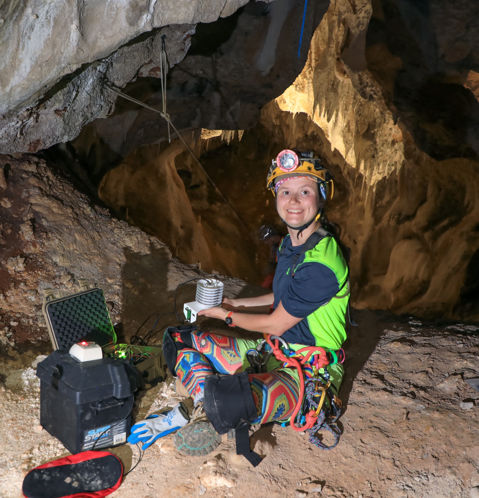

.jpg)
What is Speleometeorology?
Speleometeorology focuses on the physical processes that govern cave atmospheres, including air exchange with the surface, thermal stratification, and the influence of external weather patterns on subterranean systems.
Biography

Photo: Noah Yawn / Carlsbad Cavern, NM
My name is Riannon Colton, and I am a PhD student at the University of Arkansas focused on researching and conducting fieldwork on the measurement and interpretation of cave atmospheric processes. My work emphasizes long-term monitoring of temperature, humidity, airflow, and trace gases in subterranean environments.Research Areas
- Cave air temperature and humidity dynamics
- Seasonal and event-driven airflow patterns
- Trace gas (CO₂ and Radon) monitoring and cave ventilation
- Surface–subsurface atmospheric coupling
- Low-power environmental instrumentation
- Long-term autonomous data logging
Projects & Data
Ongoing and completed projects, datasets, and analysis tools will be published here as they become available.
Code repositories and documentation are hosted on GitHub.
Resources
Contact
For collaboration, data access, or technical questions, please reach out via rcolton@uark.edu or through the project documentation.